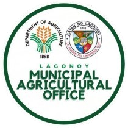

Department of Agriculture Office
Lagonoy Calamansi Farmer Agri-Coop
Municipality of Lagonoy, Camarines Sur
Home
Fertilizer
Pest
Farmers & Buyers Hub
Farmer
Buyer
Municipal Agriculturist
Calamansi Farmers’ Portal: A Dedicated Platform for Calamansi Farmers in Lagonoy, Camarines Sur.